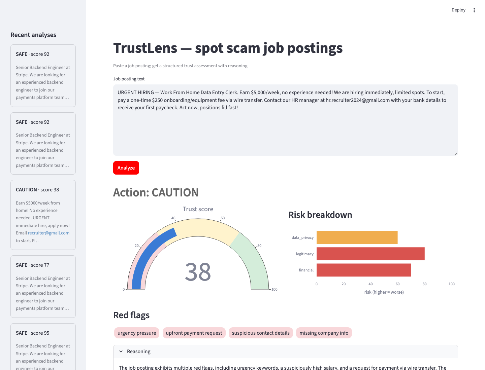
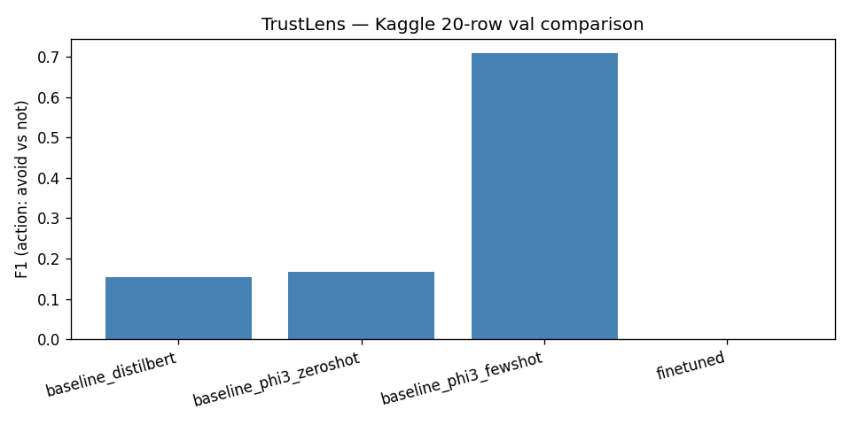

Paste a job or freelance posting and get an explainable trust assessment — score, red flags and reasoning — from heuristics, vector search and an LLM agent.
Launch live demo → View source
A hybrid pipeline so every verdict is explainable.
Urgency language, upfront-payment asks, free-webmail contacts, missing company signals and unrealistic pay.
Sentence-transformer embeddings find the nearest labelled postings in a ChromaDB index.
A LangChain agent reasons over both and returns structured JSON: score, flags, risk breakdown, action.
Every prediction is stored in SQLite and an error analyzer surfaces failure modes.
Action-F1 on a stratified validation subset (Kaggle fraudulent-postings labels).
relative F1 gain from QLoRA fine-tuning (0.421 → 0.476) over the un-tuned Phi-3-mini baseline
recall improvement — more scams caught without extra false alarms
| Model | F1 | Precision | Recall |
|---|---|---|---|
| DistilBERT classifier | 0.154 | 0.500 | 0.091 |
| Phi-3-mini zero-shot | 0.167 | 1.000 | 0.091 |
| Phi-3-mini baseline | 0.421 | 0.500 | 0.364 |
| Phi-3-mini + LoRA fine-tune | 0.476 | 0.500 | 0.455 |
| Phi-3-mini few-shot (3-ICL) | 0.710 | 0.550 | 1.000 |
Evaluated on N = 20 rows; see the repo for caveats and full breakdown.
